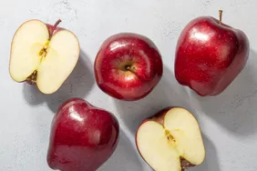
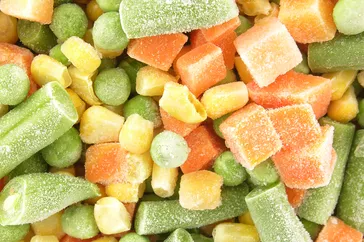

Recipe
All about Dairy

Fruits and Vegetables

All about ingredients
Food and Glasses storage containers
Ingredients:
ALR-why-are-red-delicious-apples
cooking-with-frozen-vegetables
Recipe instructions
May lower cholesterol. Apples contain pectin, a natural fibre found in plants.
Eating a diet high in fruits and vegetables can reduce a person's risk of developing heart disease
back